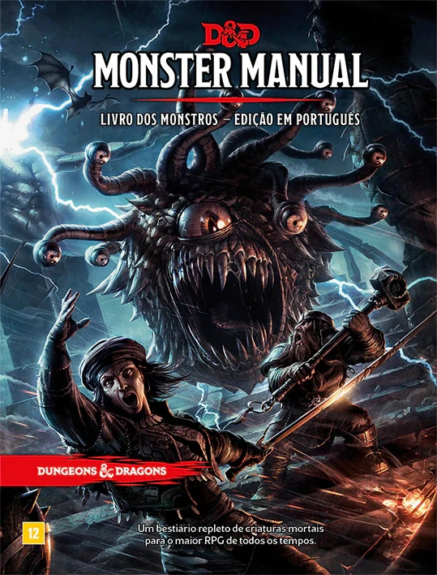

Manual do Monstros
Autor/Editora: Gary Gygax-
Sistema: O termo Manual dos Monstros refere-se principalmente ao célebre livro de regras de Dungeons & Dragons da Wizards of the Coast, mas também teve edições marcantes para outros sistemas populares no Brasil, como o 3D&T Alpha da Jambô Editora.-
Sinopse
O livro funciona como o manual definitivo para o narrador. Ele fornece ferramentas criativas, diretrizes e regras opcionais para que o Mestre crie e conduza universos de fantasia, gerencie o ritmo da história e desafie os jogadores de forma equilibrada e divertida.
Avaliar este tomo:
★
★
★
★
★